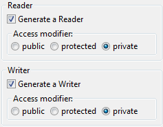

Options

There is a flag to let the refactoring create accessor methods depending on the configuration. Furthermore there are visibility modifiers which can be selected through radio buttons.| Option | Description |
|---|---|
| Generate a Reader | Creates a method for reading the field from outside. |
| Generate a Writer | Creates a method for setting the field from outside. |
| Acess modifier |
|